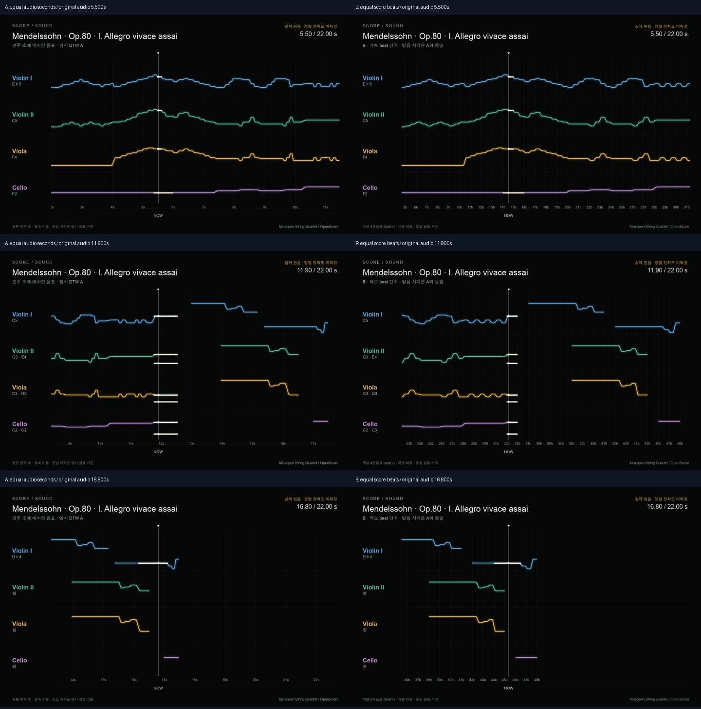
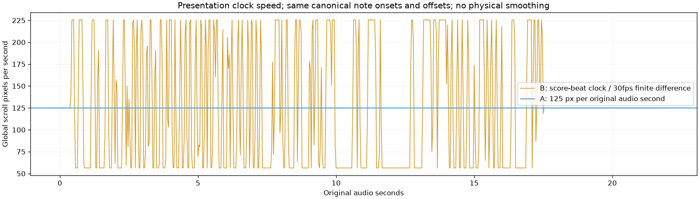

R/R RIBBON ROOM실험 기록 · 이전 결과를 보존한 검토 화면입니다. 새 그래픽 작업은 작업실에서 이어갑니다.
다른 실험 보기
B4.3 · 가로 흐름 A/B · 같은 발음 시각
같은 연주, 다른 가로 흐름.
멘델스존 Op.80 I악장 · Musopen String Quartet 실제 원음. A는 같은 연주 초를 같은 간격으로, B는 같은 악보 beat를 같은 간격으로 배치합니다. 두 리본의 음표·진입·끝·pitch는 같습니다.
준비 중…
A의 눈금은 연주 초(s), B의 눈금은 악보의 4분음표 beat(b)입니다. 위쪽 시간 표시는 모두 같은 실제 연주 초입니다. 보기·성부를 바꿔도 원음 위치·속도·재생 상태는 유지합니다.
B는 같은 beat 길이를 유지하면서 연주의 빠르기에 따라 전역 이동 속도가 바뀝니다. 실제 DTW 경로의 짧은 기울기 변화도 드러나며 물리효과로 완화하지 않았습니다. 이 변화가 검증된 루바토라는 뜻은 아닙니다.
같은 원음 시점의 A/B 그림

전역 이동 속도 비교

기존 A 영상 · 새 B 영상 · 가로 표현 설정 · 발음·재생선 A/B 검사 · B 영상·음원 검사 · 검증 · 출처 · 보고서
원본 정렬·연주 이벤트와 기존 A 영상은 보존했습니다. 비교 구간 전체의 가로 길이를 맞췄고, 대응 범위 밖의 앞뒤 문맥은 전체 평균 기울기로만 표시합니다. 이는 음표 정렬 범위의 확장이 아닙니다. 수동 측정은 계속 보류하며 기본 표현은 A로 유지합니다.